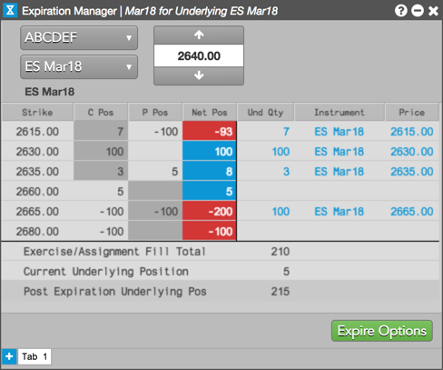

The Expiration Manager widget allows you to monitor your positions by strike and easily and accurately expire your options positions. Based on the underlying instrument price entered in the widget, Expiration Manager displays your position by line. It shows your in-the-money options position that will expire into your underlying position, your current underlying position, and your total underlying position after expiration.
When your in-the-money options are expired, the widget automatically modifies your total underlying position.

Note: Permission to expire options is enabled by your administrator using the Update Positions setting for a user or account in the Setup application. Without permission, you will not be able to expire options, but can still use Expiration Manager to monitor current and post-expiration positions.
To open the Expiration Manager, click Widgets | Options | Expiration Manager in the workspace window menu bar.